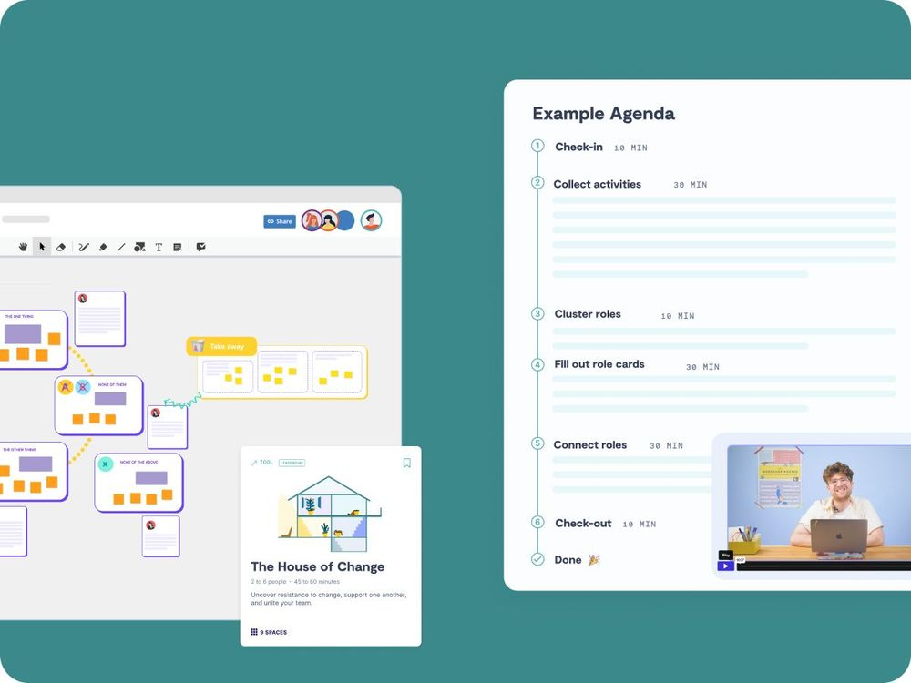

Business
5+ seats
Access for multiple team members within a tailored plan
We believe strong teams are the foundation of a strong healthcare system. With more than 150 proven workshops and methods, we support you in improving collaboration and streamlining everyday workflows.
Learn how fewer coordination loops create more time for patients and for your teams.

With 9 Spaces, a nursing team at Niels Stensen Clinics has brought fresh momentum to their collaboration. What once went unspoken is now addressed openly creating clarity, shared responsibility, and active participation in everyday work.
To help you move beyond talking about change and actually make it happen, we provide practical, ready-to-use materials:

Access for multiple team members within a tailored plan
Our team will be happy to help you find the perfect solution for you.